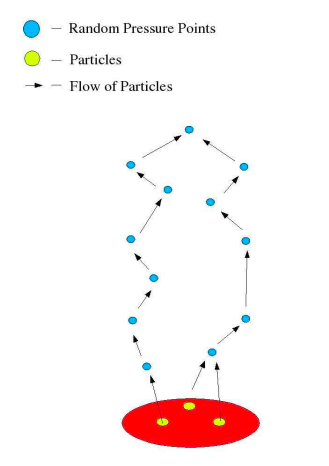

Summary
In this project, we created an audio visualizer using fire simulations that react to change in features in music like frequency, danceability, and tempo. We created a set of realistic fires that change in color, amplitude, and velocity due to the aforementioned music feature changes. We are able to connect locally uploaded music files and results from the Spotify API to make the simulation interactive.
Technical Approach:
Fire Particle System
For our basic fire system, we worked off an existing particle system demo. This simulation simulated flames shooting out of a rocket, so we had to make some fundamental changes to what the particle system looked like. We used this diagram to the right to determine the different steps in rendering a particle system.
First, to represent the particles, we decreased the average size of the particles and increased the number of particles added at every timestep in order to make the particles less noticeable and the entire system more dynamic and realistic. We set an initial opacity and color that mimicks the color of the fire, and we randomly generate lifespans. We also set an initial velocity so that the fire does not shoot up unrealistically, nor does it stay so low as to be completely uninteresting.
Second, to update the particle, we update both its attributes and position. For its appearance attributes, we slowly decrease the alpha value the particle fades as it reaches the top of the fire. Then, we update its next location. This involves many forces: rotation, so that particles spin around to create more stoachasticity; gravity; drag; and pressure points.
-
Drag and Gravity
We apply drag in the xz axes and gravity in the y axis. We use the drag formula:

However, there are a few optimizations we make for our specific particle system. First, the densities are the same. Second, while the sizes of the particle may vary, the variation is incredibly small, so we consider the masses and reference area of our particles to be a constant contributing to the drag coefficient. In that case, instead of calculating the force, we can directly calculate the acceleration, since the mass is constant across all particles.
We implement gravity similarly. Since we assume the particles have near identical mass and shape, we directly subtract off a vector pointing down in the y direction.
-
Pressure Points
 While gravity and drag improve the rendering of the particle system, we found that the fire was not as realistic as we desired, since there was no flickering of flames like in real fires. According to a 2005 paper by Sanandanan Somasekaran, "as gases in a fire get hotter, they become less dense than its surrounding air. Thus, the gases move upwards towards a region where the pressure is lower." In order to follow this approach, we decided to generate pressure points to better mimick the tongues of flame.
To implement this, we spawned randomly generated pressure points that attract particles nearby. These pressure points are also particles, but they have a different lifespan and do not change positions until their lifespan is used up and a new point is randomly generated to take its place. This greatly improved the rendering of our fire and made it less symmetric. However, since this was inteded to be a WebGL simulation that is accessible and easy to use, we were constrained by the number of pressure points we could use without making the program unbearably slow. THus, while adding more pressure points would have made the fire even more realistic, we simply use 5 pressure points.
The diagram to the left illustrates what pressure points look like in the fire simulation. We also chose to simulate pressure points only at the top of the fire in order to reduce computational complexity when running the simulation.
Fire Fluid System
Implementation
Our fire fluid system was based off of the Navier Stokes fluid simulation. We based our implementation off of the Nvidia GPU Gems fluid simulation overview, as well as a simple 2D Navier Stokes implementation we found on shadertoy. The simple Navier Stokes variant that we used implemented velocity advection, divergence, and pressure shaders in 2D. We extended this implementation to work in THREE.js in 3D with additional shaders for temperature and reactivity advection.
The base implementation for Navier Stokes does three shader passes, the output of each pass becoming the input of the next pass, with inputs and outputs being stored as textures. The first pass implements velocity, which steps in the negative direction of the velocity at each (x, y) position to get the new velocity at each (x, y). This procedure is called advection. We then pass these new velocities as a texture to a divergence shader, which estimates the divergence at each (x, y) point by calculating the velocity at the 4 points above (v_y1), below (v_y0), left (v_x1), and right (v_x0) of the current (x, y), and computing div_xy = ((v_x1 - v_x0) + (v_y1 - v_y0)) / 2. We then pass this divergence output and the velocity output into a pressure shader, where we compute the Jacobi pressure at each (x, y). This calculation gets the sum of pressures at the surrounding blocks above, below, left, and right of each (x, y), and subtracts out the divergence at (x, y) and divides by 4. We then display the output velocity at each texture. To implement this in THREE.js, we had to use the special GPUComputationRenderer, which allows us to set the render targets and dependencies of each shader pass. We then use a ping-pong buffer to display the output velocity to alternating materials in the same location. This integration was acutally quite tricky, because support for the GPUComputationRenderer is quite poor, and setting the render targets to work with the ping pong buffers for each shader is quite tricky.
We next converted this implementation to 3D, where we indexed into a 2D texture as if it were 3D, similar to the way one might index into a 1D framebuffer as if it were 2D. We then used ray marching to accumulate the velocities along a particular ray, and output the resulting accumulated values. It took a bit of fine-tuning to ensure that the fluid simulation displayed with the right amount of color, as it was easy to get a blown-out white blob or just a black square. We added our 3D texture onto a cube that we could place anywhere in the scene.
We then implemented shaders to make the fluid simulation a real fire simulation. This included first changing the colors from gray to orange, and then adding a temperature advection shader and a reactivity advection shader, The temperature advection makes the fluid sink in the colder air at the top of the cell, and rise near the warm source of the fluid. It uses the same advection as the velocity, but accesses into the temperature texture, rather than the velocity texture to update the new temperature values. We repeat this process for reactivity advection, which just makes the fire decrease in energy as a function of time. This just gets the advected reactivity value, and subtracts a uniform constant from it. We also added a slight smoke effect to the fire. When reactivity reaches 0, we briefly turn the colorful fire into a gray smoke. We also scale the alpha value of the smoke with the z height of the smoke.
Finally, we implemented some changes to make the fluid fire interact with the music. We made the colors of the fire change with the frequency amplitude of the song, with red color representing quiet frequencies, green medium, and blue loud. We then used the danceability parameter to add random perturbations to the fire to make it move around a lot more. A higher danceability led to crazier fires. Finally, we used the energy constant to modulate the reactivity constant of the fire. Higher energy meant fires had a smaller decrease in reactivity at each time step, meaning they would get taller and wider.
Challenges
We faced numerous challenges implementing the fluid simulation.
- The first challenge was integrating the texture buffer method that was used in the GPU gems and shadertoy approach into THREE.js. THREE.js isn't necessarily designed for doing multiple shader passes and is especially not designed for passing the output of one shader into another shader as input. We ended up having to manually link the outputs of each shader to the inputs of the dependent shaders using the alternate render target of the output shader. The normal use case for THREE.js is to just set a dependent shader as a dependency with a handy built-in method, but that just seemed to pass in the texture before the shader pass, rather than after.
- We next had trouble implementing the fluid simulation in 3D. The modification to the fluid simulation shaders is quite simple, as you just have to add some additional variables to support the additional z-axis. The real challenge was working around the poor 3D texture support in THREE.js. There is a 3D texture that you can use, but it wasn't possible to use these 3D textures as output targets for our multiple shader passes. To circumvent this, we created a larger 2D texture and indexed into it as if it were 3D. We designed this 2D texture as if it were a line of 2D textures incrasing along the z-axis. To index into it for a 3D point (x, y, z), the x-coordinate would be x + z * (length(x-axis)). This was further complicated, as we actual had to round the z value down, and then calculate the two nearest z-planes, and interpolate between them.
- Our final major challenge, which we were unable to solve, was integrating our fluid simulation into the particle-based simulation. We originally intended the fluid simulation to be a smoke simulation, rather than a fire simulation, but it turned out we weren't able to integrate the smoke in. This occurred because the smoke was rendered as the texture of a 3D box, and the particle-based fire was rendered inside of this box. Because the texture was displayed on the outside of the box, the particles on the inside would be blocked, even if we changed the opacity or alpha-blending of the smoke box. This produced some highly unattractive results. This would perhaps be feasible in a more modern graphics engine, where we could play around with shaders more, but would have been too challenging in WebGL. A lesson we learned from this is to plan out your implementation ahead of time, as we had just assumed that the integration step would work. The end result was fine, but we could have very easily ended up with nothing to show for our work.
Smoke
Our particle smoke implementation was fairly simple. We built upon our existing particle system, and added a smoke that rose with the same dynamics as the fire particles, but rose higher, and had different color blending. The smoke particles start out white and have an alpha value of 0 when they spawn, and increase in alpha value and darken as they reach the top of the flames. We also modify the alpha value of the fire particles to decrease towards the top of the fire, such that our additive alpha blending does not result in overwritten smoke particles. The alpha blending implementation was adapted from here. Our implementation differed by changing the color, amount, and height of the smoke, as well as the inclusion of the same realistic pressure dynamics acting on our particle fire implementation.
Embers
To generate embers, we likewise created a new ember particle system class, similar to the particle system class implemented for our basic fires. We added changes to our program's fragment shader in order to accommodate our new diffuse textures for each ember particle. The ember particles are then generated randomly around the base of our fires, and rise upwards. To ensure that our embers appear realistic, we adjusted the velocity values of the embers to flow upwards at a slower pace compared to the existing fire particles. Furthermore, we integrated randomized drag forces in the z-direction to simulate real embers floating away from the fire, and lowered the density of our fire ember clusters by adjusting the particle generation frequency based on the timestep of our system. Lastly, we made sure to incorporate values obtained from our audio analysis to adjust the lifetime and velocity of our ember particles accordingly.
Music Analysis
Once we connected the fires with the music, we had various stylistic and technical choices. First, we had to decide how to visualize the music. For this, we used TODO: write more about get byte frequencies. After using the FFT, we chose a number of frequencies to represent. We found that higher frequencies are very sensitive and are not very interesting to look at, so to determine which frequency to look at, we used an exponential function that takes in the fire index and returned an index of the FFT array. This ensured that more of the fires reflected lower frequencies, while were still a few that captured the higher frequencies.
Then, we had to make some design choices about the fire. In order to freflect a higher magnitude of a frequency, we chose to increase the velocity and lifespan of particles in that fire. That meant the fire would be much taller than the other fires. We encountered various problems trying to make the fire look realistic at various heights while also not being too computationally expensive. At the end, we settled on a range of parameters that seemed appropriate and balanced our main concerns.
Finally, we had some fun with incorporating parts of the Spotify API to make the fires more interactive. Based on the danceability and energy of tracks, we changed the colors of the fire particles and smoke particles. The lower the energy of the track, the lighter the smoke would be. Low danceability also corresponded to bluer flames; medium danceability to green flames; and high danceability to red flames. In order to achieve this effect, we changed the color values, which are interpolated throughout the lifespan of the particle. Thus, a particle can start out as a more saturated blue and slowly fade. [TODO: not sure if this is correct]
Special Effects
TODO: dance mode
Results:
TODO: final report video
References
- Software Resources
- WebGL (Three.js)
- Spotify API
- Music MP3s
- Analyser Node (FFT)
- Hardware
- Laptops: GTX 1050 and GTX 1650 Mobile GPUs
- Links Update
Contributions
Henry: I implemented the fluid-based fire simulation, and added the particle smoke to the particle-based fire. For the fire simulation, (1) I integrated the base Navier Stokes shaders into the THREE.js web framework,
(2) transformed the original 2D shaders into 3D shaders and added a ray-marching renderer for the 3D output, (3) Added temperature advection and reactivity advection shader passes to the renderer to make our fluid simulation
a fire simulation, and (4) added some parameters from the audio analysis tool that my teammates built to modulate reactivity and add random perturbations to the fire.
Priyanka:
Hannah: I worked on creating the ember particle system, and optimized the efficiency of our rendering program. For the ember particle system, I incorporated changes to the program's fragment shader to accommodate our new ember textures, modified parameters such as drag forces to allow the embers to rise realistically, and finally adjusted the amplitude and velocity parameters of the system to work with the audio input variables. To improve the efficiency of our code, I made adjustments to our particle rendering algorithm to minimize heavy operations such as particle sorting and iteration.
Amber: I introduced the main particle system and worked on making the fire particle system more realistic. This involved manipulating drag, gravity, particle attributes like size, pressure points and more. After connecting the FFT to our fire simulation, I worked on making the fires more reactive to changes in music. I changed the frequencies each fire would respond to by focusing on lower frequencies, since those are more interesting to look at. I changed some small parameters to make the fire more realistic. I also worked on some design aspects, like changing the color or smokiness of the fire with Spotify API data.